Lecciones de circuitos eléctricos - Volumen IV
Capítulo 9
FUNCIONES LÓGICAS COMBINACIONALES
- Introduction
- A Half-Adder
- A Full-Adder
- Decoder
- Encoder
- Demultiplexers
- Multiplexers
- Using multiple combinational circuits
Autor original: David Zitzelsberger
Introduction
El término "combinacional" nos llega de las matemáticas. En matemáticas un combinación es un conjunto desordenado, que es una forma formal de decir que a nadie le importa en qué orden vinieron los artículos. La mayoría de los juegos funcionan de esta manera, si tiraste los dados uno a la vez y sacas un 2 seguido de un 3 es lo mismo que si hubieras sacado un 3 seguido de un 2. Con lógica combinacional, el circuito produce la misma salida independientemente del orden en que se cambian las entradas.
Hay circuitos que dependen de cuando cambian las entradas, estos Los circuitos se llaman lógica secuencial. Aunque no encontrarás el término "lógica secuencial" en los títulos de los capítulos, los próximos capítulos discutirán lógica secuencial.
Los circuitos prácticos tendrán una combinación de lógica combinacional y secuencial, con lógica secuencial asegurándose de que todo suceda en orden y combinacional Lógica que realiza funciones como aritmética, lógica o conversión.
Ya has utilizado circuitos combinacionales. Cada puerta lógica discutida anteriormente es una función lógica combinacional. Sigamos cómo funcionan dos puertas NAND. funciona si les proporcionamos entradas en diferentes órdenes.
Comenzamos con ambas entradas siendo 0.
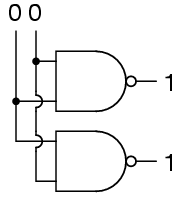
Luego configuramos una entrada alta.
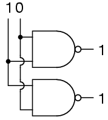
Luego configuramos la otra entrada en alto.
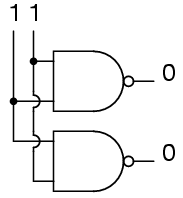
Por lo tanto, a las puertas NAND no les importa el orden de las entradas, y encontrará Lo mismo se aplica a todas las demás puertas cubiertas hasta este punto (AND, XOR, OR, NOR, XNOR y NO).
A Half-Adder
Como primer ejemplo de lógica combinacional útil, construyamos un dispositivo que Puede sumar dos dígitos binarios. Podemos calcular rápidamente cuáles son las respuestas. debería ser:
0 + 0 = 0 0 + 1 = 1 1 + 0 = 1 1 + 1 = 102
Entonces necesitamos dos entradas (ayb) y dos salidas. La producción de bajo orden se llamará Σ porque representa la suma y la salida de orden superior se llamará Coutporque representa el acarreo fuera.
La tabla de verdad es
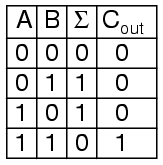
Simplificar ecuaciones booleanas o hacer algún mapa de Karnaugh producirá la El mismo circuito que se muestra a continuación, pero comience mirando los resultados. El Σ La columna es nuestra conocida puerta XOR, mientras que la Coutla columna es la puerta AND. Este dispositivo se llama medio sumador por razones que harán sentido en la siguiente sección.
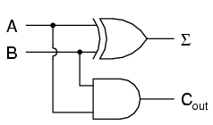
o en lógica de escalera
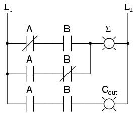
A Full-Adder
El medio sumador es extremadamente útil hasta que quieras agregar más de uno. cantidades de dígitos binarios. La forma lenta de desarrollar sumadores de dos dígitos binarios sería ser hacer una tabla de verdad y reducirla. Entonces cuando decidas hacer un tres sumador de dígitos binarios, hazlo de nuevo. Luego, cuando decidas hacer un número de cuatro dígitos sumador, hazlo de nuevo. Entonces cuando... Los circuitos serían rápidos, pero el desarrollo el tiempo sería lento.
Observar una suma de dos dígitos binarios muestra a qué debemos extender la suma múltiples dígitos binarios.
11 11 11 --- 110
Mire cuántas entradas utiliza la columna del medio. Nuestro sumador necesita tres entradas; a, b, y el acarreo de la suma anterior, y podemos usar nuestra entrada de dos sumador para construir un sumador de tres entradas.
Σ es la parte fácil. La aritmética normal nos dice que si Σ = a + segundo + Ciny Σ1= a + b, entonces Σ = Σ1 + Cin.
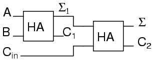
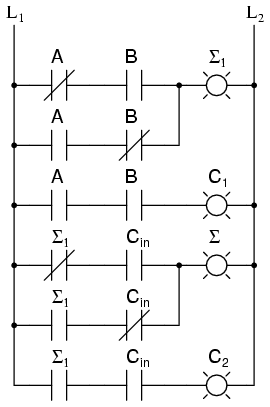
¿Qué hacemos con C?1y c2? Veamos tres sumas de entrada y rápidamente calcular:
Cin + a + b = ? 0 + 0 + 0 = 0 0 + 0 + 1 = 1 0 + 1 + 0 = 1 0 + 1 + 1 = 10 1 + 0 + 0 = 1 1 + 0 + 1 = 10 1 + 1 + 0 = 10 1 + 1 + 1 = 11
Si tiene alguna inquietud sobre la broca de orden bajo, confirme que la El circuito y la escalera lo calculan correctamente.
Para calcular el bit de orden superior, observe que es 1 en ambos casos en los que a + b produce una C1. Además, el bit de orden superior es 1 cuando a + b produce a Σ1y cines un 1. Entonces tendremos un acarreo cuando c1O (Σ1Y cin). Nuestro sumador completo de tres entradas es:
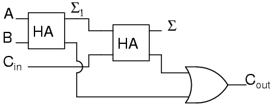
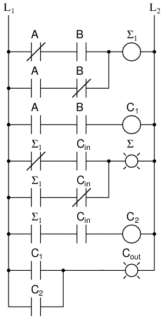
Para algunos diseños, poder eliminar uno o más tipos de compuertas puede ser importante, y puede reemplazar la puerta OR final con una puerta XOR sin cambiando los resultados.
Ahora podemos conectar dos sumadores para sumar cantidades de 2 bits.
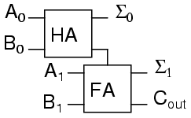
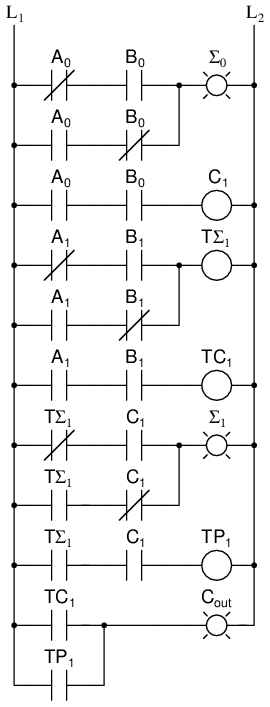
A0es el bit de orden inferior de A, un1es el bit de orden superior de A, B0es el bit de orden inferior de B, B1es el bit de orden superior de B, Σ0es el bit de orden inferior de la suma, Σ1es el bit de orden superior de la suma, y coutes el llevar.
Un sumador de dos dígitos binarios nunca se haría de esta manera. En cambio el más bajo Los bits de pedido también pasarían por un sumador completo.
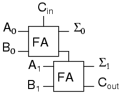
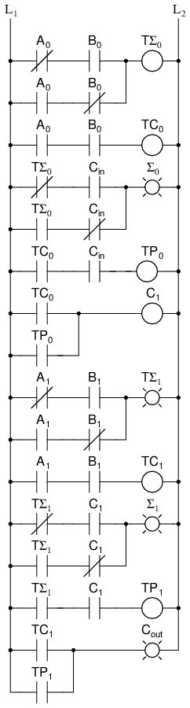
Hay varias razones para esto, una es que podemos permitir que una circuito para determinar si el acarreo de orden más bajo debe incluirse en el suma. Esto permite encadenar sumas aún mayores. Consideremos dos diferentes Maneras de ver una suma de cuatro bits.
111 1<-+ 11<+- 0110 | 01 | 10 1011 | 10 | 11 ----- - | ---- | --- 10001 1 +-100 +-101
Si permitimos que el programa agregue un número de dos bits y recordemos el acarreo para más tarde, luego use ese acarreo en la siguiente suma, el programa puede sumar cualquier número de bits que el usuario desea aunque solo hayamos proporcionado un sumador de dos bits. pequeño Los PLC también se pueden encadenar para obtener números mayores.
Estos sumadores completos también se pueden expandir a cualquier número de bits de espacio. lo permite. Como ejemplo, aquí se explica cómo hacer un sumador de 8 bits.
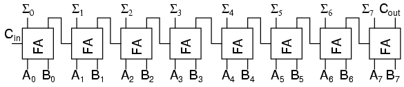
Este es el mismo resultado que usar los dos sumadores de 2 bits para hacer un sumador de 4 bits. sumador y luego usar dos sumadores de 4 bits para hacer un sumador de 8 bits o volver a duplicar lógica de escalera y actualización de los números.
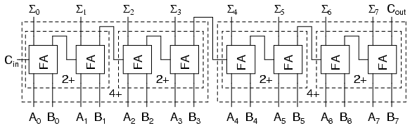
Cada "2+" es un sumador de 2 bits y está formado por dos sumadores completos. Cada "4+" es un Sumador de 4 bits y formado por dos sumadores de 2 bits. Y el resultado de dos sumadores de 4 bits es el mismo sumador de 8 bits que usamos sumadores completos para construir.
Para cualquier circuito combinacional grande, generalmente existen dos enfoques para diseño: puedes tomar circuitos más simples y replicarlos; o puedes diseñar el circuito complejo como un dispositivo completo.
Usar circuitos más simples para construir circuitos complejos le permite gastar menos tiempo de diseño, pero luego requiere más tiempo para que las señales se propaguen los transistores. El diseño del sumador de 8 bits anterior tiene que esperar a que se cxoutseñales para pasar de un0 + B0hasta las entradas de Σ7.
Si un diseñador construye un sumador de 8 bits como un dispositivo completo simplificado a un suma de productos, entonces cada señal simplemente viaja a través de una puerta NOT, una puerta AND puerta y una puerta OR. Un dispositivo de diecisiete entradas tiene una tabla de verdad con 131.072 entradas, y reducir 131.072 entradas a una suma de productos llevará algo de tiempo tiempo.
Al diseñar sistemas que tienen un tiempo de respuesta máximo permitido para Para proporcionar el resultado final, puede comenzar usando circuitos más simples y luego Intente reemplazar partes del circuito que sean demasiado lentas. De esa manera gastas la mayor parte de tu tiempo en las partes de un circuito que importan.
Decoder
Un decodificador es un circuito que transforma un código en un conjunto de señales. es llamado decodificador porque hace lo contrario de codificar, pero comenzaremos nuestro estudio de codificadores y decodificadores con decodificadores porque son más sencillos de diseño.
Un tipo común de decodificador es el decodificador de línea que toma un código binario de n dígitos. número y lo decodifica en 2nlíneas de datos. el El más simple es el decodificador de 1 a 2 líneas. La tabla de verdad es
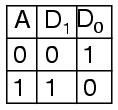
A es la dirección y D es la línea de datos. D0NO es un y D1es A. El circuito se parece
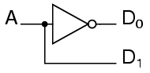
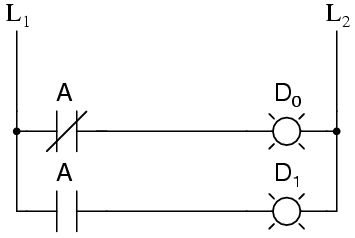
Sólo un poco más complejo es el decodificador de 2 a 4 líneas. la tabla de verdad es
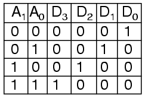
Desarrollado en un circuito, parece
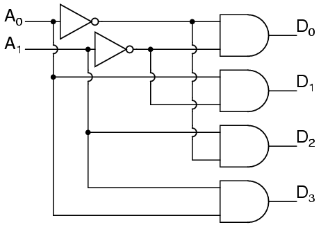
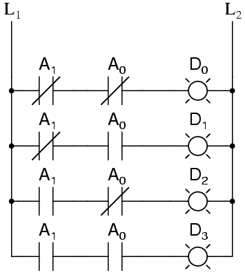
Los decodificadores de líneas más grandes se pueden diseñar de manera similar, pero al igual que con el sumador binario hay una manera de hacer decodificadores más grandes combinando decodificadores más pequeños. Un circuito alternativo para el decodificador de 2 a 4 líneas es
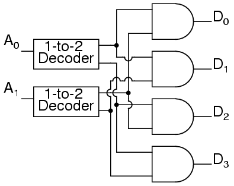
Reemplazar los decodificadores 1 a 2 con sus circuitos mostrará que ambos Los circuitos son equivalentes. De manera similar se puede hacer un decodificador de 3 a 8 líneas. desde un decodificador de 1 a 2 líneas y un decodificador de 2 a 4 líneas, y un decodificador de 4 a 16 líneas Se puede realizar a partir de dos decodificadores de 2 a 4 líneas.
También podría considerar hacer una escalera de decodificadores de 2 a 4 a partir de un decodificador de 1 a 2. escaleras. Si lo haces, podría verse así:
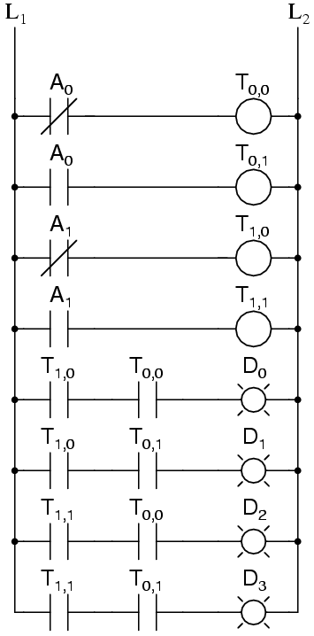
Para cierta lógica, puede ser necesario desarrollar una lógica como esta. para un En un sumador de ocho bits, solo sabemos cómo sumar ocho bits sumando un bit a la vez. Generalmente es más fácil diseñar lógica de escalera a partir de ecuaciones booleanas o de verdad. tablas en lugar de diseñar puertas lógicas y luego "traducirlas" en escaleras lógica.
Una aplicación típica de un circuito decodificador de línea es seleccionar entre múltiples dispositivos. Un circuito que necesita seleccionar entre dieciséis dispositivos podría tener dieciséis líneas de control para seleccionar qué dispositivo debe "escuchar". Con un decodificador sólo se necesitan cuatro líneas de control.
Encoder
Un codificador es un circuito que convierte un conjunto de señales en un código. vamos Comience a hacer una tabla de verdad del codificador de líneas 2 a 1 invirtiendo el decodificador 1 a 2. tabla de verdad.
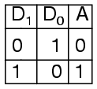
Esta tabla de verdad es un poco corta. Una tabla de verdad completa sería
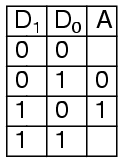
Una pregunta que debemos responder es ¿qué hacer con esos otros insumos? hacer ¿los ignoramos? ¿Les hacemos generar una salida de error adicional? En muchos circuitos este problema se resuelve agregando lógica secuencial para saber no solo qué entrada está activa pero también en qué orden se activaron las entradas.
Una aplicación más útil del diseño de codificador combinacional es un binario a Codificador de 7 segmentos. Los siete segmentos se dan según
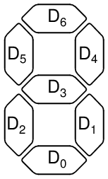
Nuestra tabla de verdad es:
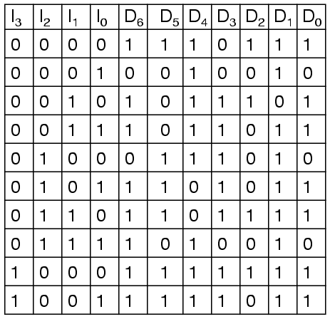
Decidir qué hacer con las seis entradas restantes de la tabla de verdad es más fácil con este circuito. No se debe esperar que este circuito codifique un combinación indefinida de entradas, por lo que podemos dejarlas como "no importa" cuando diseñar el circuito. Las ecuaciones se simplificaron con mapas de Karnaugh.
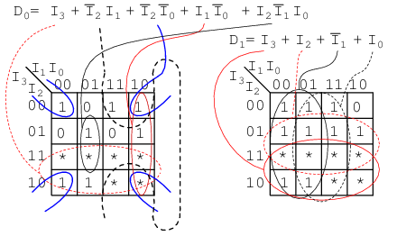
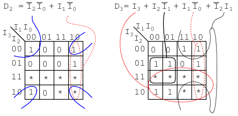
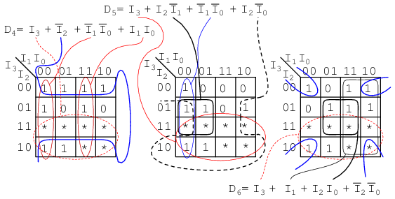
La colección de ecuaciones se resume aquí:
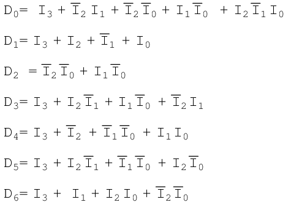
El circuito es:
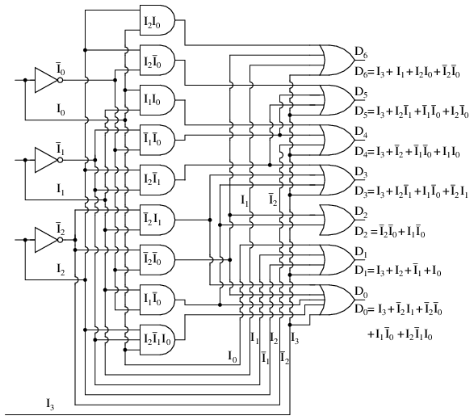
Y el diagrama de escalera correspondiente:
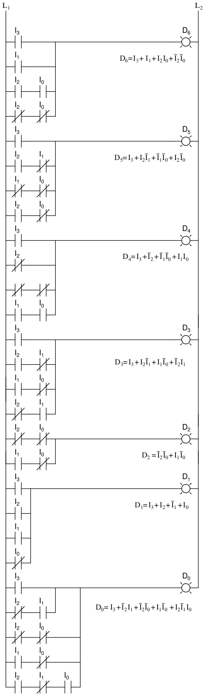
Demultiplexers
Un demultiplexor, a veces abreviado dmux, es un circuito que tiene uno entrada y más de una salida. Se utiliza cuando un circuito desea enviar una señal a uno de muchos dispositivos. Esta descripción suena similar a la descripción dada para un decodificador, pero un decodificador se utiliza para seleccionar entre muchos dispositivos mientras que un demultiplexor se utiliza para enviar una señal entre muchos dispositivos.
Un demultiplexor se utiliza con tanta frecuencia que tiene su propio esquema. símbolo
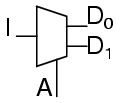
La tabla de verdad para un demultiplexor 1 a 2 es
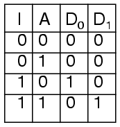
Usando nuestro decodificador 1 a 2 como parte del circuito, podemos expresar esto circuito fácilmente
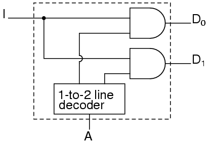
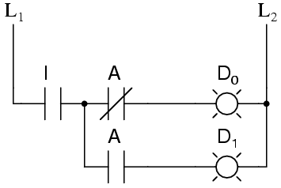
Este circuito se puede ampliar de dos maneras diferentes. Puedes aumentar el número de señales que se transmiten, o puede aumentar el número de entradas que pasan. Para aumentar el número de entradas que reciben pasado solo requiere un decodificador de línea más grande. Aumentando el número de Las señales que se transmiten son aún más fáciles.
Por ejemplo, un dispositivo que pasa un conjunto de dos señales entre cuatro señales es un "demultiplexor 1 a 2 de dos bits". Su circuito es
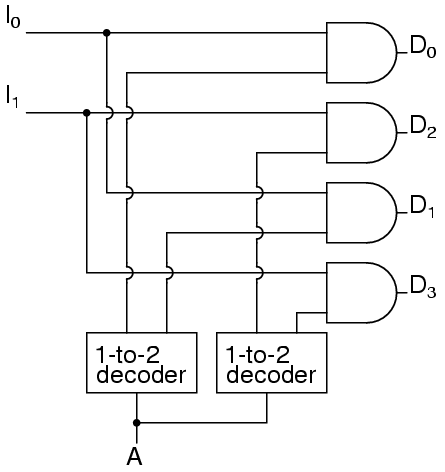
o expresando el circuito como
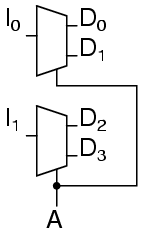
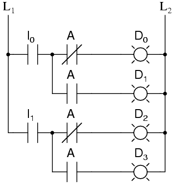
muestra que podrían ser dos demultiplexores 1 a 2 de un bit sin cambiar su comportamiento esperado.
Se puede construir fácilmente un demultiplexor de 1 a 4 a partir de demultiplexores de 1 a 2 como sigue.
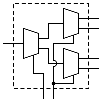
Multiplexers
Un multiplexor, abreviado mux, es un dispositivo que tiene múltiples entradas y una salida.
El símbolo esquemático de los multiplexores es
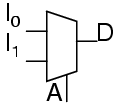
La tabla de verdad para un multiplexor 2 a 1 es
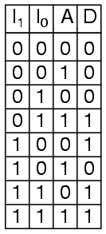
Usando un decodificador 1 a 2 como parte del circuito, podemos expresar este circuito fácilmente.
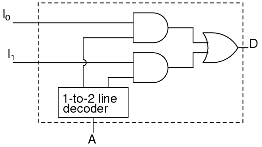
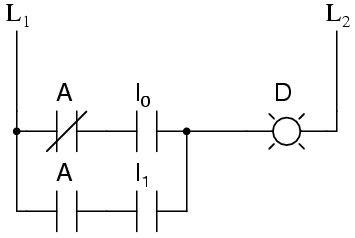
Los multiplexores también se pueden ampliar con las mismas convenciones de nomenclatura que demultiplexores. Un circuito multiplexor 4 a 1 es
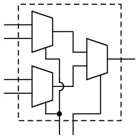
Ésa es la definición formal de multiplexor. Informalmente, hay mucho de confusión. Tanto los demultiplexores como los multiplexores tienen nombres similares, abreviaturas, símbolos esquemáticos y circuitos, por lo que es fácil la confusión. el término multiplexor, y la abreviatura mux, se utilizan a menudo para referirse también a un demultiplexor, o un multiplexor y un demultiplexor trabajando juntos. Entonces cuando Si oye hablar de un multiplexor, puede que signifique algo muy diferente.
Using multiple combinational circuits
Como ejemplo de uso de varios circuitos juntos, vamos a hacer un dispositivo que tendrá 16 entradas, que representan un número de cuatro dígitos, a un cuatro Pantalla de 7 dígitos pero usando solo un codificador de binario a 7 segmentos.
Primero, la arquitectura general de nuestro circuito proporciona lo que parece nuestra descripción proporcionada.
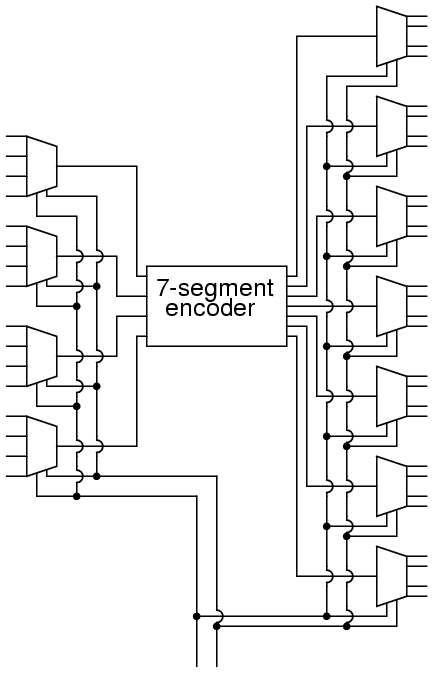
Siga este circuito y podrá confirmar que coincide con el descripción dada anteriormente. Hay 16 entradas principales. Hay dos entradas más. Se utiliza para seleccionar qué dígito se mostrará. Hay 28 salidas para controlar. la pantalla de 7 segmentos de cuatro dígitos. Sólo cuatro de las entradas primarias están codificadas en un tiempo. Sin embargo, es posible que hayas notado una posible pregunta.
Cuando se selecciona uno de los dígitos, ¿qué significan los otros tres dígitos? mostrar? Revise el circuito de los demultiplexores y observe que cualquier línea que no seleccionado por la entrada A es cero. Entonces los otros tres dígitos están en blanco. nosotros no tiene un problema, sólo se muestra un dígito a la vez.
Tengamos una perspectiva de cuán complejo es este circuito observando la lógica de escalera equivalente.
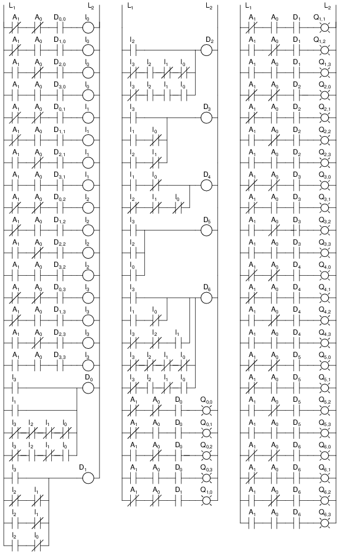
Observe lo rápido que se desarrolló este gran circuito a partir de piezas más pequeñas. Esto es cierto en la mayoría de los circuitos complejos: están compuestos de partes más pequeñas. Permitir que un diseñador abstraiga cierta complejidad y comprenda el circuito. en su conjunto. A veces un diseñador puede incluso tomar componentes que otros tienen diseñado y eliminar el trabajo de diseño de detalle.
Además de la cantidad adicional de puertas, este diseño adolece de una debilidad adicional. Sólo puedes ver una pantalla con un dígito a la vez. si hay Si hubiera alguna forma de rotar los cuatro dígitos rápidamente, podrías tener el apariencia de los cuatro dígitos que se muestran al mismo tiempo. eso es un trabajo para un circuito secuencial, que es el tema de los siguientes capítulos.
Lecciones en circuitos eléctricoscopyright (C) 2000-2023 Tony R. Kuphaldt, según los términos y condiciones delCC BY License.